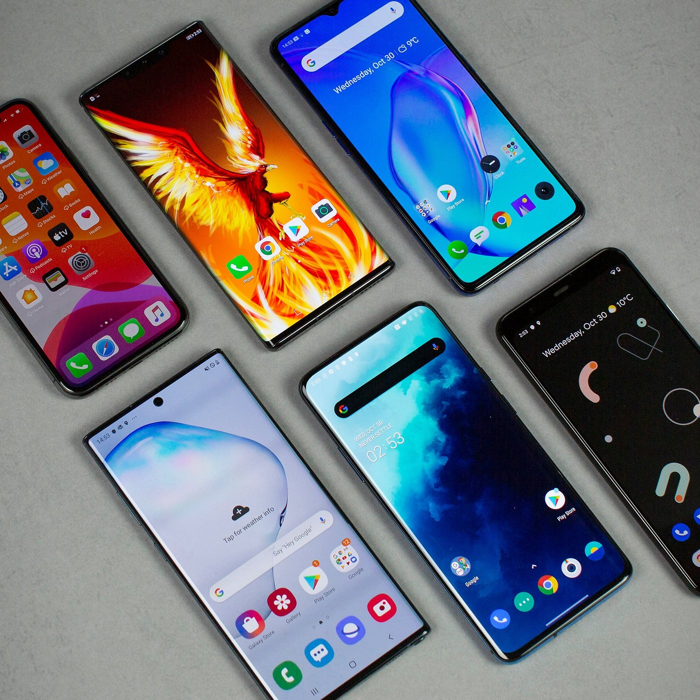

Laptops
Creator: Alan Kay
Is a portable device and enables people and students to work on school-related activities or projects virtually.
See more
Tablets
Creator: Jeff Hawkins
It can be used to search the internet, check emails, download and read articles, play games, watch educational videos, and etc. It can be used by students for online learning.
See more

Smartphones
Creator: IBM (Tech Company)
It performs many of the functions of a computer, having a touchscreen interface, can have internet access, and has an operating system that is able to download applications.
See more
E-reader
Creator: Martin Eberhard & Marc Tarpenning
Is designed for downloading electronic books, magazines, and newspapers from a wireless store. It works easily by tapping or swipping the page to flip through the electronic pages. It is a good use for students in an online environment.
See more